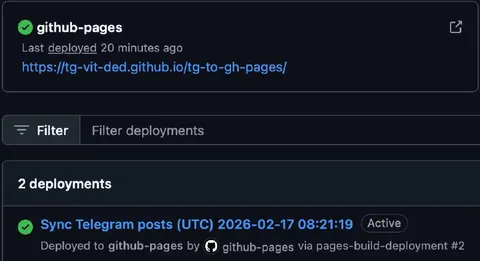

Телеграм - отличный мессенджер и площадка для контента. Но есть некоторые нюансы. Например, паршивая индексация поисковиками. А еще его не читают те, кто принципиально пользуется только мессенджером MAX.
Поэтому мои коллеги из Yandex ML Brand запилили зеркалирование тг-каналов на github pages. Во-первых, это красиво. Во-вторых, теперь у этой колонки тоже есть вебная инкарнация - https://tg-vit-ded.github.io/tg-to-gh-pages/
Работает просто, эффективно и надежно - пушишь репо, сохраняешь в секретах телеграмовские api_id, api_hash, генерируешь скриптом сессию, указываешь в переменных окружения канал, далее через github actions запускается периодический воркфлоу синхронизации, страница сервится на github pages. Умеет в статику, роботс, рсс/атом. Спасибо ребятам (и лично Пете) за такой крутой проект.
All credits to https://github.com/ml-brand/tg-to-gh-pages
